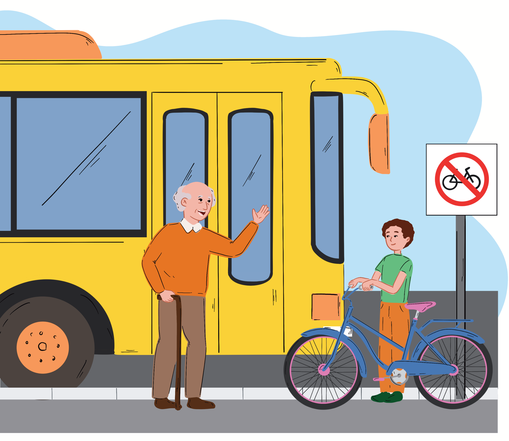

Mendime të ndryshme, vendime të përbashkëta
Në komunitetin tonë
Situata 1.
Duke pritur në stacionin e autobusit, vura re një djalë me biçikletë, i cili po priste si të tjerët. Sapo erdhi autobusi, djali tentoi të hynte brenda. Përballë portës ishte vendosur tabela ku shkruhej se ndaloheshin biçikletat e mjetet e tjera motorike. Një i moshuar aty pranë i tha djalit se duhej ta zbatonte rregullën. Është një vendim i marrë dhe i pranuar nga të gjithë. Në çast mendova: Po fëmijët me karroca, lejohen që të lëvizin me autobus?
